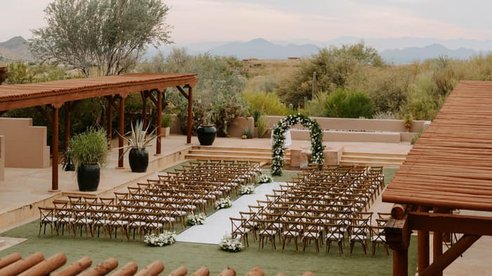

I've been photographing weddings in Arizona for over ten years. 150 couples. 150 different stories. Every single one worth telling.
I shoot on 50mm and 85mm primes at wide apertures — f/2.2 to 2.5 — which gives everything that soft, dreamy quality you've probably noticed in the portfolio. I'm not interested in stiff poses or forced smiles. I want the real moments. The ones you forgot I was there for.
Based in Scottsdale. Available anywhere.